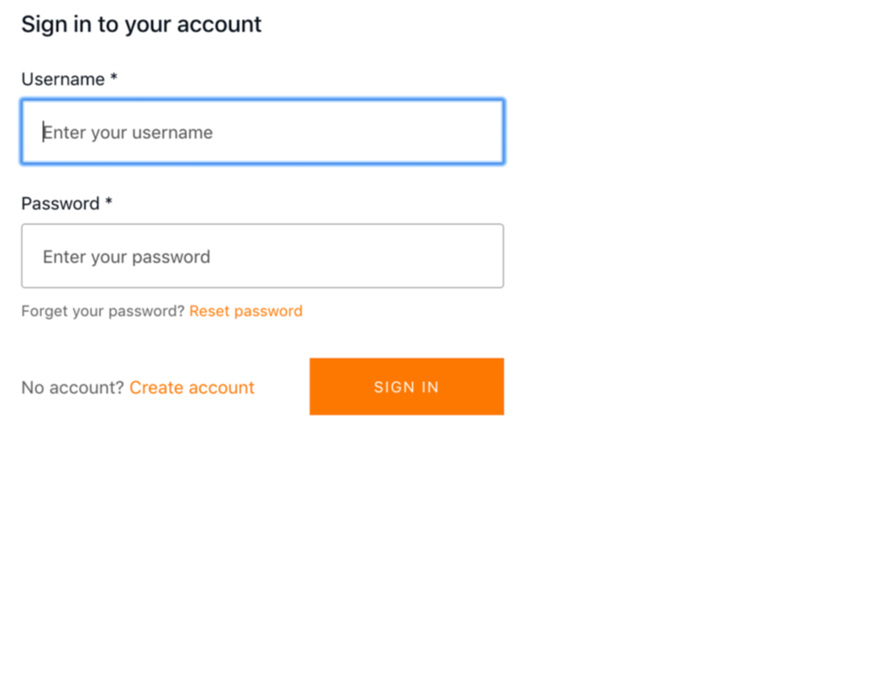

Full-stack serverless through AWS Amplify
If you are new to AWS, the number of services can be overwhelming for you, to help AWS has created the Amplify CLI. It allows developers to create, configure, update, delete cloud services directly from the frontend environment.
Amplify client:
Its bundle of the library for easy-to-use API for JS application which needs to interact with AWS services.
It also supports other SDKs for React native, native iOS, and native Android and frontend and mobile framework support including React, React Native, Vue, Angular, native Android, and native iOS.
AWS AppSync:
AppSync is a manager API layer that uses GraphQL to make it easy for the application to interact with any data source, REST API, or microservices.
GraphQL offers a good abstraction for creating an API gateway. It defines a consistent specification for interacting with APIs in the form of three operation
- Queries (reads)
- Mutations (write/updates)
- Subscriptions (real-time data)
Before building a GraphQl API we have to build, deploy, maintain and configure our API which can be offloaded to AWS though AppSync
Installing and configuring the Amplify CLI
First, install and configure the Amplify CLI
~ npm install -g @aws-amplify/cli
Once it's installed you need to configure it with IAM use in your AWS account(access key ID and secret access key) To create a new user and configure the CLI, run the configure command
~ amplify configure
The prompt will ask you for:
- Specify the AWS region
- Specify the username
Once you give the above information CLI would take you to the AWS IAM dashboard from there you can set the permission that this newly created user should have and later on IAM will generate an access key ID and secret access key for it
Go back to CLI and paste in the values for the access key ID and secret access key.
Now you've successfully configured the CLI and you can begin creating new services.
Initializing Amplify Project:
Let's create the react app. Goto to your root folder of yours(where you want all your project files should be)
~ npm install aws-amplify @aws-amplify/ui-react.
Now, we initialize our Amplify project.
~ amplify init
Brace yourself with the stream of questionnaires that were required to build the scaffold for your application.
- Enter a name for the project: This will be the local name for the project, usually something that describes what the project is or what it does.i?
- Enter a name for the environment: This will be a reference to the initial environment that you will be working in. Typical environments in this workflow could be something like dev, local, or prod but could be anything that makes sense to you.
- Choose your default editor: This will set your editor's preference. The CLI will later use this preference to open your text editor with files that are part of the current project.
- Choose the type of app that you’re building: This will determine whether the CLI should configure, build, and run commands if you are using JavaScript. For this example, choose javascript.
- What JavaScript framework are you using? This will determine a few bases builds and start commands. For this example, choose React.
- Choose your source directory path: This allows you to set the directory where your source code will live. For this example, choose src
- Choose your distribution directory path: For web projects, this will be the folder containing the complied JavaScript source, code as well as your favicon, HTML, and CSS files. For this example, choose to build.
- Choose your build command: This specifies the command for compiling and bundling your JavaScript code. For this example, use npm run-script build.
- Choose your start command: This specifies the command to serve your application locally. For this example, use npm run-script start.
- Do you want to use an AWS profile? Here, choose Y and then pick the AWS profile you created when you ran amplify configure.
Above will initialize your Amplify project and create the following directories.
- The aws-exports file: The aws-exports file is a key-value pairing of the resource categories created for you by the CLI along with their credentials.
- The amplify folder: This folder holds all the code and configuration files for your Amplify project. In this folder, you will see two subfolders: the backend and #current-cloud-backend folders.
- The backend folder: This folder contains all the local code for your projects such as the GraphQL schema for an AppSync API, the source code for any serverless functions, and infrastructure as code representing the current local status of the Amplify project.
- The #current-cloud-backend folders: This folder holds the code and configurations that reflect what resources were deployed in the cloud with your last Amplify push command. It helps the CLI differentiate between the configuration of the resources already provisioned in the cloud and what is currently in your local backend directory (which reflects your local changes)
Now that you’ve initialized your project, you can add your first cloud service: Authentication.
Creating and Deploying Authentication service:
To create a new service, run the following command on CLI
~ amplify add auth
- Do you want to use the default authentication and security configuration? This gives you the option of creating an authentication service using a default configuration (MFA on sign-up, password at sign-in), creating an authentication configuration with social providers, or creating a completely custom authentication configuration.
- How do you want a user to be able to sign-in? This will be sign-in property. Choose the default by username.
- Do you want to configure an advanced setting? This will walk through you the advanced setting for things like additional sign-up attributes and lambda triggers. Choose No I am done
~ amplify push
After deployment is complete, your authentication service is successfully deployed. Since we re using React app, we will be using the withAuthenticator higher order (HOC) component the authentication service available for methods like signUp, signIn, signOut First, configure the React app to work with Amplify. To do so, open src/index.js and add the following code below the last import statement:
Now, the app has been configured and you can begin interacting with the authentication service. Next, open src/App.js and update the file with the following code:
At this point, you can test it out by launching the app:
~ npm start
Now, your app should be launched with the preconfigured authentication flow in front of it. See
Deleting the Resources Once you no longer need a feature or a project, you can remove it using the CLI.
To remove an individual feature, you can run the remove command:
~ amplify remove auth
